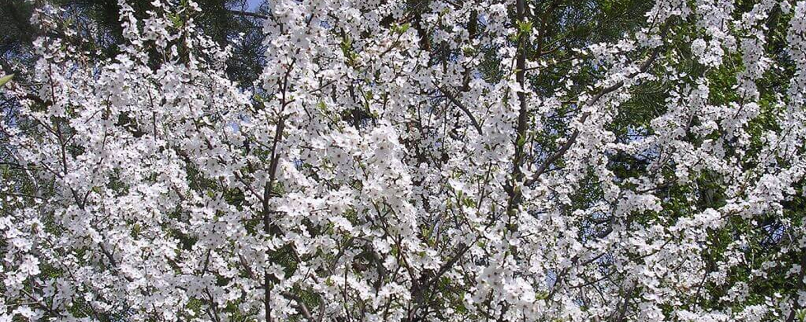

КАЛЕНДАР ЦВІТІННЯ РОСЛИНИ
Жовтень
Листопад
Грудень
Січень
Лютий
Весна
Літо
Осінь
Зима
календар алергії
Алергія весною: розпочинається раніше, триває довше і вимагає дієти від вас Через глобальне потепління весна в Україну приходить все раніше. Наприклад, у 2020 році вона розпочалась у двадцятих числах січня – саме з цього часу було науково зареєстороване стійке цвітіння ранньовесняних дерев ліщини та вільхи. Останні двадцять років ці рослини починали свій сезон на місяць пізніше, ніж зараз: наприкінці лютого – на початку березня, – в залежності від погоди.
Сезон алергії: триваліший, ранній та більш інтенсивний Але казка про дванадцять місяців, що справдилась та впевнено крокує по Землі, може зовсім не тішити ті майже 40 % хворих на поліноз українців, які чутливі до пилку дерев. Адже тепер важливий для них сезон, розпочавшись раніше, триває довше і є більше інтенсивним. Саме таку тенденцію – до збільшення кількості пилку, до подовження сезону пилкування та до підвищення пікових концентрацій алергенів у повітрі спостерігають українські вчені в останні 10 років.
Алергія єднає березу із дубом Але це ще не весь дискомфорт для людей з алергією: навесні для України притаманне цвітіння дерев, що входять до родин березових та букових. Втім, обидві ці родини належать до порядку букоцвітих, тобто, є родичами. А, відтак, їх пилок є частим винуватцем перехресних реакцій. Тобто, люди, чутливі до пилку вільхи та ліщини, мають тенденцію реагувати й на пилок берези, адже всі разом входять до родини березових. Разом із ними туди ж входить і граб, пилок якого, як було доведено дослідженнями українських лікарів, також є високоалергенним. Про небезпеку пилку граба говорять й швейцарські вчені. Вони встановили, що зі збільшенням концентрацій цього пилку повітрі в їх країні збільшується кількість загострень пилкової астми.
І цвітуть ліщина, вільха, граб та береза, змінюючи один одного, тепер вже з січня аж по травень, тим самим весь час наражаючи на небезпеку людей, які чутливі до пилку рослин родини березових. Втім, пилок березових у повітрі замінюється пилком букових – наприкінці квітня та у травні цвітуть дуб та бук. І якщо ареал, приміром, граба, здебільшого, розповсюджується на Правобережну Україну, ліщину можна знайти у лісах Півночі та Центру, а бук зустрічається, здебільшого на Заході, то решта дерев потроху завойовує всю Україну.
Небезпечне озеленення І березу, і вільху, і дуб люблять використовувати в озелененні міст. Так комунальні служби і самі мешканці добровільно наражають себе, а, радше – своїх дітей, на небезпеку виникнення чутливості до пилку рослин.
Адже для того, щоб проявились симптоми алергії, потрібен час. Він же необхідний деревам, щоб підрости і почати продукувати пилок. Наприклад, дуб починає цвісти лише через 25 років. Відтак, алергенним пилком мають всі шанси дихати майбутні покоління – діти та онуки тих, хто сьогодні висаджує джерело алергену у себе під вікнами, на сусідній вулиці або у парку. Це ж стосується й улюбленим багатьма кипарисів, тисів, туй та ялівців. Вже з десяток, як не більше, років, в Україні спостерігається сплеск популярності озеленення міських та присадибних територій цими рослинами. Між тим, у Європі пилок кипариса, у Японії – його родички криптомерії, а у США – тису – є одним із основних алергенів, що за силою та масштабами своєї дії може сперечатись хіба що з амброзією.
Алерген, що з’являється раніше за інших і результати висадки потенційно алергенного десанту дають себе знати і у наших широтах: алергію на пилок кипарисових, а саме до цієї родини належать усі перераховані рослини, ‒ в українців все частіше реєструють як шкірні, так і молекулярні тести на алергію. За даними останніх, до пилку цієї групи вже чутливі 10 % людей з полінозом в Україні.
Як правило, концентрації пилку цих рослин у відкритому повітрі не є дуже високими. Втім, якщо у вас під вікнами ростуть туя, кипарис, тис чи ялівець, а ви чи інші члени родини маєте схильність до алергії, то у вас та/або ваших дітей з часом може розвинутись чутливість і до пилку названих дерев. Прикрість полягає і в тому, що цвісти кипарисові починають раніше за інші рослини. В останні роки місяцем їх пилку в Україні був лютий. У південних регіонах та у Криму цвітіння кипарисових починалось ще у січна. Та, у зв’язку із глобальним потеплінням, січень все частіше нестиме небезпеку тим, хто має чутливість до пилку кипарису та його родичів.
Яблука небезпечні весною Ще одна небезпека – їжа. Порядок букоцвітих разом із всіма його джерелами алергенів належить до підкласу розидів, а, відтак, береза, вільха, ліщина, граб та інші є родичами яблук. І не лише їх, а й інших рослин, які разом із яблунею входять до родини розових. Ось чому люди, чутливі до пилку берези, реагують й на яблуко, алергени якого, зазвичай, викликають у них синдром оральної алергії.
Він проявляється свербежем у роті, опуханням губ, язика, гортані. Втім, як правило, швидко проходить і не несе загрози життю.
Якщо у вас астма або алергія, вейпінг може загострити симптоми та викликати запалення дихальних шляхів. Крім того, при вдиханні пропіленгліколю і гліцерину подразнюються дихальні шляхи і підвищується ризик легеневих інфекцій.
Вже за нетривалого використання рідина для електронних сигарет може викликати подразнення легенів і горла. Люди, які використовують вейп, часто називають це «ударом по горлу». Цей термін описує такі відчуття як біль, поколювання і печіння в горлі, які відчуває людина при вдиханні пари.
При виникненні будь-якого з перерахованих вище симптомів при курінні електронних сигарет припиніть їх використання і проконсультуйтеся з лікарем.
Джерела інформації:
- https://kiai.com.ua/ua-issue-article-1624/Chutlivist-naselennya-do-chinnikiv-polinozu-v-Ukrayini-za-danimi-molekulyarnoyi-diagnostiki-alergiyi-ALEX-
- https://www.researchgate.net/publication/324117268_Seasonal_changes_in_plant_pollen_concentrations_over_recent_years_in_Vinnytsya_Central_Ukraine
Алергія весною: розпочинається раніше, триває довше і вимагає дієти від вас Через глобальне потепління весна в Україну приходить все раніше. Наприклад, у 2020 році вона розпочалась у двадцятих числах січня – саме з цього часу було науково зареєстороване стійке цвітіння ранньовесняних дерев ліщини та вільхи. Останні двадцять років ці рослини починали свій сезон на місяць пізніше, ніж зараз: наприкінці лютого – на початку березня, – в залежності від погоди.
Сезон алергії: триваліший, ранній та більш інтенсивний Але казка про дванадцять місяців, що справдилась та впевнено крокує по Землі, може зовсім не тішити ті майже 40 % хворих на поліноз українців, які чутливі до пилку дерев. Адже тепер важливий для них сезон, розпочавшись раніше, триває довше і є більше інтенсивним. Саме таку тенденцію – до збільшення кількості пилку, до подовження сезону пилкування та до підвищення пікових концентрацій алергенів у повітрі спостерігають українські вчені в останні 10 років.
Алергія єднає березу із дубом Але це ще не весь дискомфорт для людей з алергією: навесні для України притаманне цвітіння дерев, що входять до родин березових та букових. Втім, обидві ці родини належать до порядку букоцвітих, тобто, є родичами. А, відтак, їх пилок є частим винуватцем перехресних реакцій. Тобто, люди, чутливі до пилку вільхи та ліщини, мають тенденцію реагувати й на пилок берези, адже всі разом входять до родини березових. Разом із ними туди ж входить і граб, пилок якого, як було доведено дослідженнями українських лікарів, також є високоалергенним. Про небезпеку пилку граба говорять й швейцарські вчені. Вони встановили, що зі збільшенням концентрацій цього пилку повітрі в їх країні збільшується кількість загострень пилкової астми.
І цвітуть ліщина, вільха, граб та береза, змінюючи один одного, тепер вже з січня аж по травень, тим самим весь час наражаючи на небезпеку людей, які чутливі до пилку рослин родини березових. Втім, пилок березових у повітрі замінюється пилком букових – наприкінці квітня та у травні цвітуть дуб та бук. І якщо ареал, приміром, граба, здебільшого, розповсюджується на Правобережну Україну, ліщину можна знайти у лісах Півночі та Центру, а бук зустрічається, здебільшого на Заході, то решта дерев потроху завойовує всю Україну.
Алерген, що з’являється раніше за інших і результати висадки потенційно алергенного десанту дають себе знати і у наших широтах: алергію на пилок кипарисових, а саме до цієї родини належать усі перераховані рослини, ‒ в українців все частіше реєструють як шкірні, так і молекулярні тести на алергію. За даними останніх, до пилку цієї групи вже чутливі 10 % людей з полінозом в Україні.
Як правило, концентрації пилку цих рослин у відкритому повітрі не є дуже високими. Втім, якщо у вас під вікнами ростуть туя, кипарис, тис чи ялівець, а ви чи інші члени родини маєте схильність до алергії, то у вас та/або ваших дітей з часом може розвинутись чутливість і до пилку названих дерев. Прикрість полягає і в тому, що цвісти кипарисові починають раніше за інші рослини. В останні роки місяцем їх пилку в Україні був лютий. У південних регіонах та у Криму цвітіння кипарисових починалось ще у січна. Та, у зв’язку із глобальним потеплінням, січень все частіше нестиме небезпеку тим, хто має чутливість до пилку кипарису та його родичів.
Яблука небезпечні весною Ще одна небезпека – їжа. Порядок букоцвітих разом із всіма його джерелами алергенів належить до підкласу розидів, а, відтак, береза, вільха, ліщина, граб та інші є родичами яблук. І не лише їх, а й інших рослин, які разом із яблунею входять до родини розових. Ось чому люди, чутливі до пилку берези, реагують й на яблуко, алергени якого, зазвичай, викликають у них синдром оральної алергії.
Джерела інформації:
- https://kiai.com.ua/ua-issue-article-1624/Chutlivist-naselennya-do-chinnikiv-polinozu-v-Ukrayini-za-danimi-molekulyarnoyi-diagnostiki-alergiyi-ALEX-
- https://www.researchgate.net/publication/324117268_Seasonal_changes_in_plant_pollen_concentrations_over_recent_years_in_Vinnytsya_Central_Ukraine
Алергія весною: розпочинається раніше, триває довше і вимагає дієти від вас Через глобальне потепління весна в Україну приходить все раніше. Наприклад, у 2020 році вона розпочалась у двадцятих числах січня – саме з цього часу було науково зареєстороване стійке цвітіння ранньовесняних дерев ліщини та вільхи. Останні двадцять років ці рослини починали свій сезон на місяць пізніше, ніж зараз: наприкінці лютого – на початку березня, – в залежності від погоди.
Сезон алергії: триваліший, ранній та більш інтенсивний Але казка про дванадцять місяців, що справдилась та впевнено крокує по Землі, може зовсім не тішити ті майже 40 % хворих на поліноз українців, які чутливі до пилку дерев. Адже тепер важливий для них сезон, розпочавшись раніше, триває довше і є більше інтенсивним. Саме таку тенденцію – до збільшення кількості пилку, до подовження сезону пилкування та до підвищення пікових концентрацій алергенів у повітрі спостерігають українські вчені в останні 10 років.
Алергія єднає березу із дубом Але це ще не весь дискомфорт для людей з алергією: навесні для України притаманне цвітіння дерев, що входять до родин березових та букових. Втім, обидві ці родини належать до порядку букоцвітих, тобто, є родичами. А, відтак, їх пилок є частим винуватцем перехресних реакцій. Тобто, люди, чутливі до пилку вільхи та ліщини, мають тенденцію реагувати й на пилок берези, адже всі разом входять до родини березових. Разом із ними туди ж входить і граб, пилок якого, як було доведено дослідженнями українських лікарів, також є високоалергенним. Про небезпеку пилку граба говорять й швейцарські вчені. Вони встановили, що зі збільшенням концентрацій цього пилку повітрі в їх країні збільшується кількість загострень пилкової астми.
І цвітуть ліщина, вільха, граб та береза, змінюючи один одного, тепер вже з січня аж по травень, тим самим весь час наражаючи на небезпеку людей, які чутливі до пилку рослин родини березових. Втім, пилок березових у повітрі замінюється пилком букових – наприкінці квітня та у травні цвітуть дуб та бук. І якщо ареал, приміром, граба, здебільшого, розповсюджується на Правобережну Україну, ліщину можна знайти у лісах Півночі та Центру, а бук зустрічається, здебільшого на Заході, то решта дерев потроху завойовує всю Україну.
Небезпечне озеленення І березу, і вільху, і дуб люблять використовувати в озелененні міст. Так комунальні служби і самі мешканці добровільно наражають себе, а, радше – своїх дітей, на небезпеку виникнення чутливості до пилку рослин.
Адже для того, щоб проявились симптоми алергії, потрібен час. Він же необхідний деревам, щоб підрости і почати продукувати пилок. Наприклад, дуб починає цвісти лише через 25 років. Відтак, алергенним пилком мають всі шанси дихати майбутні покоління – діти та онуки тих, хто сьогодні висаджує джерело алергену у себе під вікнами, на сусідній вулиці або у парку. Це ж стосується й улюбленим багатьма кипарисів, тисів, туй та ялівців. Вже з десяток, як не більше, років, в Україні спостерігається сплеск популярності озеленення міських та присадибних територій цими рослинами. Між тим, у Європі пилок кипариса, у Японії – його родички криптомерії, а у США – тису – є одним із основних алергенів, що за силою та масштабами своєї дії може сперечатись хіба що з амброзією.
Алерген, що з’являється раніше за інших і результати висадки потенційно алергенного десанту дають себе знати і у наших широтах: алергію на пилок кипарисових, а саме до цієї родини належать усі перераховані рослини, ‒ в українців все частіше реєструють як шкірні, так і молекулярні тести на алергію. За даними останніх, до пилку цієї групи вже чутливі 10 % людей з полінозом в Україні.
Як правило, концентрації пилку цих рослин у відкритому повітрі не є дуже високими. Втім, якщо у вас під вікнами ростуть туя, кипарис, тис чи ялівець, а ви чи інші члени родини маєте схильність до алергії, то у вас та/або ваших дітей з часом може розвинутись чутливість і до пилку названих дерев. Прикрість полягає і в тому, що цвісти кипарисові починають раніше за інші рослини. В останні роки місяцем їх пилку в Україні був лютий. У південних регіонах та у Криму цвітіння кипарисових починалось ще у січна. Та, у зв’язку із глобальним потеплінням, січень все частіше нестиме небезпеку тим, хто має чутливість до пилку кипарису та його родичів.
Яблука небезпечні весною Ще одна небезпека – їжа. Порядок букоцвітих разом із всіма його джерелами алергенів належить до підкласу розидів, а, відтак, береза, вільха, ліщина, граб та інші є родичами яблук. І не лише їх, а й інших рослин, які разом із яблунею входять до родини розових. Ось чому люди, чутливі до пилку берези, реагують й на яблуко, алергени якого, зазвичай, викликають у них синдром оральної алергії.
Він проявляється свербежем у роті, опуханням губ, язика, гортані. Втім, як правило, швидко проходить і не несе загрози життю.
Якщо у вас астма або алергія, вейпінг може загострити симптоми та викликати запалення дихальних шляхів. Крім того, при вдиханні пропіленгліколю і гліцерину подразнюються дихальні шляхи і підвищується ризик легеневих інфекцій.
Вже за нетривалого використання рідина для електронних сигарет може викликати подразнення легенів і горла. Люди, які використовують вейп, часто називають це «ударом по горлу». Цей термін описує такі відчуття як біль, поколювання і печіння в горлі, які відчуває людина при вдиханні пари.
При виникненні будь-якого з перерахованих вище симптомів при курінні електронних сигарет припиніть їх використання і проконсультуйтеся з лікарем.
Джерела інформації:
- https://kiai.com.ua/ua-issue-article-1624/Chutlivist-naselennya-do-chinnikiv-polinozu-v-Ukrayini-za-danimi-molekulyarnoyi-diagnostiki-alergiyi-ALEX-
- https://www.researchgate.net/publication/324117268_Seasonal_changes_in_plant_pollen_concentrations_over_recent_years_in_Vinnytsya_Central_Ukraine
Алергія весною: розпочинається раніше, триває довше і вимагає дієти від вас Через глобальне потепління весна в Україну приходить все раніше. Наприклад, у 2020 році вона розпочалась у двадцятих числах січня – саме з цього часу було науково зареєстороване стійке цвітіння ранньовесняних дерев ліщини та вільхи. Останні двадцять років ці рослини починали свій сезон на місяць пізніше, ніж зараз: наприкінці лютого – на початку березня, – в залежності від погоди.
І цвітуть ліщина, вільха, граб та береза, змінюючи один одного, тепер вже з січня аж по травень, тим самим весь час наражаючи на небезпеку людей, які чутливі до пилку рослин родини березових. Втім, пилок березових у повітрі замінюється пилком букових – наприкінці квітня та у травні цвітуть дуб та бук. І якщо ареал, приміром, граба, здебільшого, розповсюджується на Правобережну Україну, ліщину можна знайти у лісах Півночі та Центру, а бук зустрічається, здебільшого на Заході, то решта дерев потроху завойовує всю Україну.
Небезпечне озеленення І березу, і вільху, і дуб люблять використовувати в озелененні міст. Так комунальні служби і самі мешканці добровільно наражають себе, а, радше – своїх дітей, на небезпеку виникнення чутливості до пилку рослин.
Адже для того, щоб проявились симптоми алергії, потрібен час. Він же необхідний деревам, щоб підрости і почати продукувати пилок. Наприклад, дуб починає цвісти лише через 25 років. Відтак, алергенним пилком мають всі шанси дихати майбутні покоління – діти та онуки тих, хто сьогодні висаджує джерело алергену у себе під вікнами, на сусідній вулиці або у парку. Це ж стосується й улюбленим багатьма кипарисів, тисів, туй та ялівців. Вже з десяток, як не більше, років, в Україні спостерігається сплеск популярності озеленення міських та присадибних територій цими рослинами. Між тим, у Європі пилок кипариса, у Японії – його родички криптомерії, а у США – тису – є одним із основних алергенів, що за силою та масштабами своєї дії може сперечатись хіба що з амброзією.
Алерген, що з’являється раніше за інших і результати висадки потенційно алергенного десанту дають себе знати і у наших широтах: алергію на пилок кипарисових, а саме до цієї родини належать усі перераховані рослини, ‒ в українців все частіше реєструють як шкірні, так і молекулярні тести на алергію. За даними останніх, до пилку цієї групи вже чутливі 10 % людей з полінозом в Україні.
Як правило, концентрації пилку цих рослин у відкритому повітрі не є дуже високими. Втім, якщо у вас під вікнами ростуть туя, кипарис, тис чи ялівець, а ви чи інші члени родини маєте схильність до алергії, то у вас та/або ваших дітей з часом може розвинутись чутливість і до пилку названих дерев. Прикрість полягає і в тому, що цвісти кипарисові починають раніше за інші рослини. В останні роки місяцем їх пилку в Україні був лютий. У південних регіонах та у Криму цвітіння кипарисових починалось ще у січна. Та, у зв’язку із глобальним потеплінням, січень все частіше нестиме небезпеку тим, хто має чутливість до пилку кипарису та його родичів.
Джерела інформації:
- https://kiai.com.ua/ua-issue-article-1624/Chutlivist-naselennya-do-chinnikiv-polinozu-v-Ukrayini-za-danimi-molekulyarnoyi-diagnostiki-alergiyi-ALEX-
- https://www.researchgate.net/publication/324117268_Seasonal_changes_in_plant_pollen_concentrations_over_recent_years_in_Vinnytsya_Central_Ukraine
Питання та відповіді
Що таке синдром харчової алергії?
Синдромом харчової алергії називають свербіж, подразнення і легкий відсік слизової рота і губ як прояв алергічної реакції негайного типу на свіжі фрукти та овочі. З визначення ясно, що сам по собі він для життя не є небезпечним. Однак з нього може початися загальна алергічна реакція негайного типу.
Для синдрому харчової алергії характерно те, що його причиною бувають тільки свіжі, не піддані термічній обробці фрукти і овочі, так як синдром викликається термолабільними алергенами. Наприклад, хворий без шкоди для себе їсть суп з селерою, але не виносить селери в свіжому вигляді. Крім того, цей синдром виявляє тісний зв'язок зі специфічними пилковими алергенами. Встановлено, що алергени деяких фруктів і овочів і поширених видів пилку викликають перехресні реакції. При цьому визначення специфічних IgE in vitro і скарифікаційні шкірні проби з наявними у продажу алергенами овочів і фруктів дають негативні результати. Якщо ж скарифікаційну пробу виконати голкою, якою попередньо вкололи стиглий овоч чи фрукт, розвинеться негайна позитивна реакція. Таку скарифікаційну пробу називають «подвійний укол». Описано поліпшення у хворого з синдромом харчової алергії після десенсибілізації з приводу супутнього полінозу.
Чи можна попередити харчові алергічні реакції?
Неясно, чи можна попередити такі реакції в осіб з обтяженим сімейним анамнезом (при наявності атопії в обох батьків, важкого атопічного дерматиту та харчової алергії у братів і сестер), але доведено, що, дотримуючись певних обмежень в харчуванні, можна уповільнити розвиток алергічних захворювань і зменшити їх тяжкість.
А) вважають, що вагітним в останньому триместрі не слід вживати в їжу арахіс, фундук, креветки і рибу, а годуючим матерям - коров'яче молоко, арахіс, фундук, креветки і рибу.
Б) бажано грудне вигодовування протягом першого року життя.
В) для змішаного і штучного вигодовування кращі гіпоалергенні суміші на основі гідролізатів білка.
Г) густу їжу (прикорм) не дають до 6 місяців.
Д) коров'яче молоко і яйця не дають до 1 року.
Е) такі продукти, як арахіс, фундук, ракоподібні і рибу слід вводити в раціон після 2 років, а краще пізніше
Чи треба при алергії до арахісу виключати з раціону всі бобові?
Ні. Алергія до інших бобовим у осіб, що мали алергічні реакції на арахіс, навіть важкі, зустрічаються рідко. Тільки у 5% хворих одночасно спостерігається клінічно виражена алергія різної тяжкості ще до 1 - 2 видам бобів. Однак особи з алергією до арахісу дуже часто дають позитивні шкірні проби або радіоаллергосорбентний тест з іншими бобовими, навіть якщо в якості продукту харчування вони переносяться добре.
Наскільки поширені харчова алергія і непереносимість їжі?
А) алергія до тих чи інших видів їжі спостерігається у 5-8% дітей, непереносимість молока - приблизно у 2,5% немовлят.
Б) 1-2% дорослих страждають харчовою алергією, підтвердженої провокаційними харчовими пробами. Легка форма харчової алергії, так званий харчової алергічний синдром, можливо, поширена ще більше, але в частині випадків залишається незареєстрованою.
В) при телефонному опитуванні алергія до земляного горіха (арахісу) і горіхів інших видів виявлена в 1% сімей.
Г) 25% опитаних сімей змушені були внести зміни в харчування через непідтверджену «харчову алергію» або непереносимості їжі.
Д) лактазна недостатність спостерігається у 25% населення США, а в цілому нею страждають до 75% населення земної кулі.
Які засоби частіше викликають алергічну реакцію?
Туш на водній основі, що містить емульгатори, часто викликає роздратування шкіри повік. Однак іноді спостерігається непереносимість самої по собі неемульгованої в воді туші. У таких випадках рекомендують користуватися пресованої тушшю або олівцем для підведення очей.
Косметичні засоби для очей і шкіри навколо них містять антибактеріальні речовини-консерванти, що попереджають їх обсіменіння бактеріями. Найчастіше з цією метою додають ефіри парагідробензойної кислоти. При попаданні на кон'юнктиву вони можуть викликати роздратування, але нанесення містячих їх засобів на повіки зазвичай переноситься добре. Консерванти квартемум-15 і імідазоліднілмочевіна виділяють формальдегід. Ці консерванти можуть викликати алергічну реакцію самі по собі або роздратування внаслідок утворення формальдегіду. Крім того, в якості консервантів використовують сорбітат калію, діізопропаноламін в третинний дібутілгідрохінон.
Деякі лаки для нігтів містять смолу толуолсульфонамідформальдегід, яка після висихання може викликати алергічну реакцію. При потирання очей вона заноситься з пальців на повіки. «Дублюючий» ектопічний дерматит спостерігається при попаданні на повіки косметичних засобів для волосся. Гіпоалергенні лаки для нігтів поліефірної смоли не містять.
Джерелами алергічних реакцій з боку кон'юнктиви і шкіри повік бувають також олівці для підведення очей, тіні для очей і штучні вії. Олівці для вій і щипчики можуть містити нікель, який теж викликає алергічну реакцію.